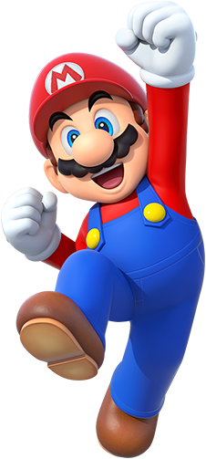

Nombre: Mario
Especie: Humano
Profesión: Fontanero
Primera aparición: Donkey Kong (1981)
Mario es el protagonista principal de la saga Super Mario. Vive numerosas aventuras para rescatar a la Princesa Peach y proteger el Reino Champiñón.